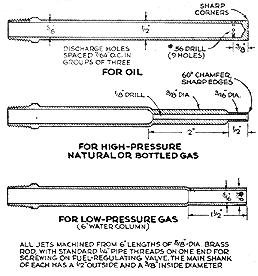

BURNER AND BLOWER ASSEMBLY is bracketed to a converted bottled-gas cylinder, ready to be connected to a fuel line. Rheostat (below bracket) regulates blower motor. Rear of stove (right) needs damper if gas is burned instead of oil. Disk is 1/8"" steel plate, 1"" smaller in diameter than exhaust pipe; shaft is 1/2"" steel rod. Platform welded on top of stove is optional.